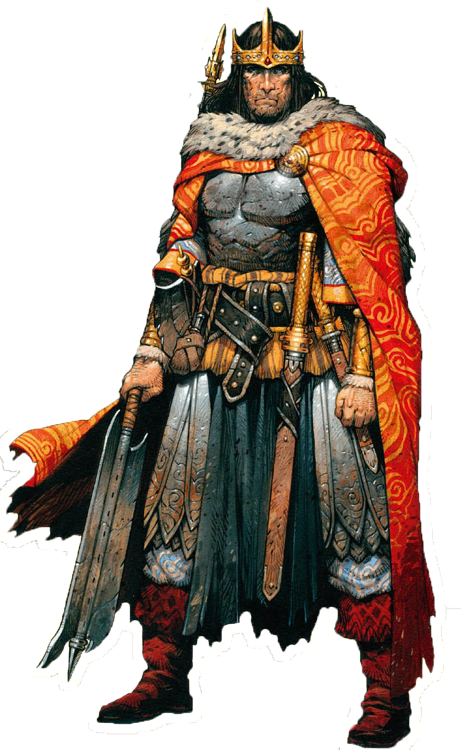

Giocatori
Solomon Fleming
La guerra l'ho combattuta a sud-ovest. Durante la guerra ho preso la lebbra, la quale mi ha sfregiato e infiammato il cervello, motivo per il quale sono un po' svitato.
Amras Lossëhelin
Provenienza: un bosco lontano. Mangia bacche dalla nascita e nutre profondo rispetto verso ogni forma di vita non ostile.Non porta un armatura di cuoio ma una di radici intrecciate molto resistenti, con caratteristiche simili a quella di cuoio. Ha abbandonato il suo villaggio perché a causa di una malattia detta xyellus che ha attaccato le piante da frutto di cui si cibavano, il consiglio degli anziani ha deciso di catturare dei tacchini selvaggi per cibarsi delle loro uova.Ha comprato un mulo al mercato solo perché lo ha visto sofferente e gli ha fatto pena, lo tiene senza briglie e non gli fa portare pesi eccessivi
Durance Talbaas
Predicatore di Heironeus: Durance era un prete di campagna di un piccolo villaggio. Alcune voci di presunte molestie nei confronti delle fedeli lo hanno costretto a lasciare la relativa tranquillità del paesino e cercare fortuna vagabondando per il mondo. Gli anni e il vino pesano sulle sue spalle ma le sue parole sono ancora in grado di convincere le persone a finanziare il suo alcolismo. Ultimamente si è convinto che la protezione di Heironeus gli permetta di guadagnarsi da vivere come avventuriero.
Al momento vive ad Amorgoi, in una marca di confine del regno di Tauros
Ha un mulo di nome Magran.
Abitanti di Amorgoi
Camillo Manomonca
L'oste del villaggio. Grassoccio, rubizzo e pelato, lavora sodo alla sua locanda "Il Ginepro". Da quando e' morta la moglie, si e' legato in maniera morbosa a sua figlia Evelyn.
Evelyn
Figlia di Camillo, lo aiuta nella gestione della locanda. E' la ragazza piu' bella del villaggio, ed ha una tresca col Peter, il figlio del mugnaio.
Ireneo Scrypt
Il mastro di posta, l'uomo piu' carismatico di Amorgoi.
Kurt Balazar
Un bullo di campagna che vive del poco che gli hanno lasciato i genitori, morti durante la grande guerra quando Kurt aveva solo 11 anni. Spende le nottate alla locanda ubriacandosi e importunando i forestieri.
Abitanti del Forte Rosso
Lord Georg Corona

Il Lord del forte, ne condivide i tratti esteriori, forte ed imponente. In realta' e' un uomo molto colto che investe molte energie per sollevare le sorti della sua gente. E' un paladino dell'ordine dei 12.
Augusto Poiter
Il ciambellano
Ethalos
Detto "Sfracello" dalle malelingue, e' il mago di corte.